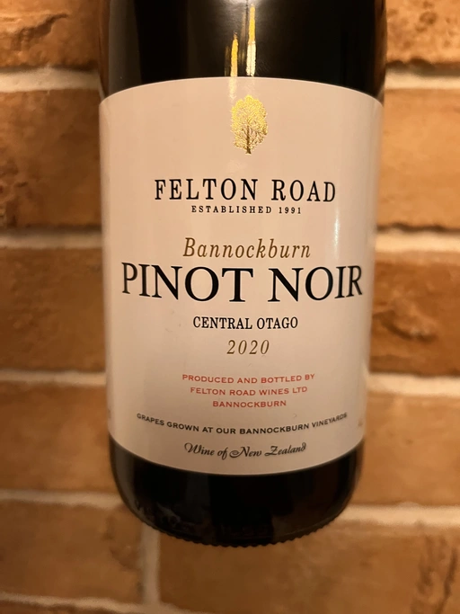

- Type
- Red Still, Dry
- Producer
- Felton Road
- Vintage
- 2020
- Location
- New Zealand, Central Otago
- Grapes
- Pinot Noir
- Alcohol
- 14
- Sugar
- 0
- Price
- 1510 UAH
- Cellar
- N/A
Ratings
2022-11-24 - 8.50
One of my favourite producers from New Zealand keeps me happy. Consistently great Pinot Noir with a beautiful and typical bouquet of raspberry, strawberry, white pepper, forest floor and a fistful of flowers (peonies and marigold mix). Delicate, sophisticated and precise with a nice and flavourful aftertaste.